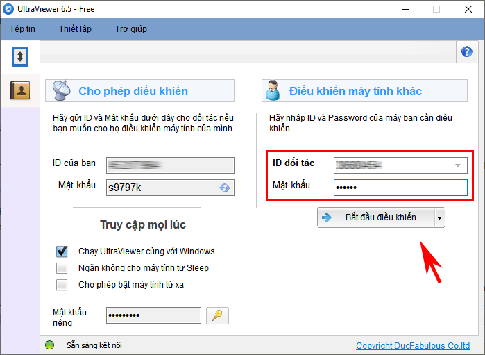
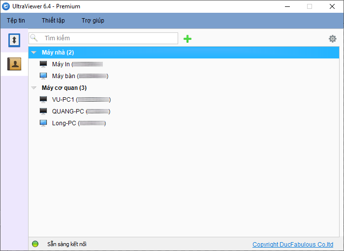

Phần mềm điều khiển máy tính từ xa UltraViewer: 5 tính năng quan trọng bạn cần biết
Bạn thường xuyên sử dụng phần mềm điều khiển máy tính từ xa UltraViewer để hỗ trợ khách hàng hoặc làm việc từ xa nhưng chưa biết cách sử dụng phần mềm sao cho hiệu quả? Hãy cùng chúng tôi tìm hiểu thêm trong bài viết dưới đây nhé.
1. Phần mềm điều khiển máy tính từ xa UltraViewer
UltraViewer là ứng dụng giúp điều khiển và máy tính từ xa thông dụng nhất hiện nay. Thông qua kết nói mạng internet, bạn có thể hỗ trợ hoặc nhận những hỗ trợ về công nghệ thông tin như sữa lỗi máy tính, cài đặt phần mềm, chia sẻ màn hình… một cách dễ dàng và nhanh chóng.
Nhờ tính năng điều khiển máy tính từ xa, bạn hoàn toàn tối ưu được quy trình làm việc đạt hiệu quả tốt nhất, đồng thời tiết kiệm một khoản chi phí đáng kể cho nhân sự, vận hành, di chuyển...
Bạn có thể download và bắt đầu trải nghiệm phần mềm UltraViewer với phiên bản hoàn toàn miễn phí. Khác với Anydesk và TeamViewer, UltraViewer cho phép sử dụng miễn phí không giới hạn thời gian, mục đích và đối tượng. Bất kể bạn là cá nhân hay doanh nghiệp, sử dụng cho mục đích thương mại hay phi thương mại, bạn đều được phép điều khiển máy tính từ xa miễn phí mà không bị ngắt kết nối đột ngột.
2. Cách điều khiển máy tính từ xa với UltraViewer
Sau khi đã cài đặt thành công, để có thể kết nối và điều khiển máy tính từ xa thông qua Ultraviewer, bạn thực hiện theo hướng dẫn như sau:
Yêu cầu đối tác gửi ID và Password ghi trên phần mềm Ultraviewer của họ cho bạn. Tiếp đến, nhập IP và Password của đối tác vào phần mềm và nhấn chọn Bắt đầu Kết nối.

Khi đó, cửa số màn hình máy tính của đối tác sẽ hiện ra trên màn hình thiết bị của bạn. Giờ đây bạn hoàn toàn điều khiển máy tính của đối tác ngay trên màn hình máy tính của bạn. Ngược lại, nếu bạn là người được điều khiển, bạn hãy cung cấp ID và Password phần mềm của mình cho họ để họ có thể bắt đầu quá trình truy cập từ xa
Truy cập không cần giám sát
Trong trường hợp bạn thường xuyên cần điều khiển máy tính từ xa một thiết bị cố định, bạn có thể thiết lập máy tính bằng mật khẩu riêng trên phầm mềm UltraViewer để truy cập không cần giám sát. Nhờ vậy, bạn sẽ không cần phải yêu cầu cung cấp ID và mật khẩu mỗi lần truy cập.
Để tạm dừng việc điều khiển máy tính từ xa thông qua UltraViewer, bạn chỉ cần tắt phần mềm UltraViewer trên thiết bị của bạn đi là đối tác không thể điều khiển máy tính của bạn được nữa.
3. 5 tính năng quan trọng của phần mềm điều khiển máy tính từ xa UltraViewer
Tính năng chat thông minh
Nếu bạn thường xuyên phải hỗ trợ khách hàng từ xa thì chắc hẳn nhiều khi bạn cũng cảm thấy khá nhàm chán khi phải tự tay gõ những câu chữ quen thuộc, lặp đi lặp lại hằng ngày. Nhằm giúp các bạn tiết kiệm thời gian và tăng cao hiệu suất công việc, UltraViewer đã cải tiến tính năng chat thông minh có khả năng nhắc lời chat siêu đỉnh mà bạn hiếm khi tìm thấy ở phần mềm điều khiển máy tính từ xa nào.
Tính năng chat thông minh hoạt động trên cơ chế tự động đưa ra các mẫu câu gợi ý khi bạn đang chat dựa trên dữ liệu quá khứ và tự học hỏi những gì bạn đã từng chat trước đó. Như vậy, khi lời gợi ý hiện ra, bạn chỉ cần ấn Tab để hoàn tất câu chat mà không phải gõ hết cả câu.
Để chat nhanh với đối tác, bạn ấn nút F1, cửa sổ chat sẽ bật ra và bạn có thể chat rất thuận tiện. Khi không dùng đến cửa sổ chat, bạn có thể ấn lại F1 một lần nữa để tắt đi. Bạn có thể xem lại lịch sử chat bất cứ khi nào vì nó sẽ được lưu lại tự động ở dạng file text lưu trên máy tính của bạn.
Tính năng truyền file
Trong quá trình làm việc từ xa, đôi khi bạn sẽ cần sử dụng tính năng truyền file dữ liệu từ máy tính này sang máy tính khác. Với phiên bản UltraViewer miễn phí, bạn có thể gửi/ nhận file dưới 1GB nhanh chóng. Nếu muốn gửi file có dung lượng lớn hơn (một video dài, một bộ cài phần mềm…), bạn sẽ cần nén toàn bộ tệp tin hoặc thư mục dưới dạng đuôi .zip / .rar hoặc gửi file qua mail hay các hình thức khác
Nhưng điều này chắc chắn sẽ ngốn không ít thời gian và làm gián đoạn công việc của bạn khi không thể gửi file nặng ngay lập tức. Bạn hoàn toàn không muốn gặp tình trạng đang chờ gửi file dở rồi nhận được thông báo thực hiện không thành công đúng không nào?
Để được hỗ trợ truyền file dung lượng nặng, bạn có thể nâng cấp lên UltraViewer bản quyền để quá trình truyền gửi file diễn ra thuận tiện nhất. Tùy vào các gói bản quyền khác nhau, bạn có thể gửi file với dung lượng nặng tương ứng lên tới 2 - 4 - 8 GB.
Tính năng bật máy tính từ xa
Bật máy tính từ xa là một tính năng vô cùng tuyệt vời giúp việc điều khiển máy tính từ xa của bạn trở nên tiện lợi chưa từng có. Bạn hoàn toàn có thể làm việc tại nhà hoặc bất kỳ nơi đâu mà bạn muốn kể cả khi máy tính tại cơ quan của bạn đang bật hoặc ở chế độ ngủ.

Tính năng bật máy tính từ xa còn phát huy tính linh hoạt và hữu ích của nó trong nhiều trường hợp cần truy cập khẩn cấp như khắc phục lỗi hệ thống ngay lập tức mà không cần phải tốn thời gian di chuyển hay làm gián đoạn các quy trình công việc khác.
Đặc biệt, bạn cũng không cần phải có một người chuyên giám sát và canh giờ bật nguồn máy tính để giúp bạn truy cập từ xa. Điều này không chỉ giúp giảm chi phí nhân sự mà còn tăng hiệu suất sử dụng năng lượng khi máy tính từ xa chỉ được bật khi bạn thực hiện lệnh chờ truy cập mà không cần hoạt động suốt cả ngày.
Tính năng danh bạ Online
Nếu bạn là một kĩ thuật viên chuyên phải truy cập từ xa và hỗ trợ khách hàng thường xuyên, tính năng danh bạ Online sẽ giúp công việc của bạn trở nên khoa học và dễ thực hiện hơn, Bạn sẽ không cần phải yêu cầu hàng chục, thậm chí hàng trăm lượt khách hàng cung cấp ID/ mật khẩu máy tính và nhập lại để kết nối mỗi ngày.
Bạn chỉ cần lưu danh sách máy tính sẵn có trên tính năng danh bạ Online của phần mềm điều khiển máy tính từ xa UltraViewer. Nhờ vậy, bạn có thể click chọn tên máy tính có trong danh sách và kết nối ngay mỗi lần thực hiện truy cập từ xa.

Bên cạnh đó, tính năng danh bạ online còn thông báo cho bạn biết được máy tính nào vừa mở hoặc đang mở phần mềm điều khiển máy tính từ xa UltraVIewer để kết nối đến lúc cần. Do đó, bạn có thể chủ động trong việc sắp xếp điều khiển và kết nối danh sách các máy tính cần hỗ trợ một cách thuận lợi và dễ dàng nhất
Nghe âm thanh trên máy tính từ xa
Đây là một trong những tính năng không thể thiếu trong quá trình bạn điều khiển máy tính từ xa và có liên quan tới yếu tố âm thanh. Một số công việc từ xa cần nghe âm thanh trên máy tính thường gặp như: học online từ xa, sửa lỗi âm thanh trên máy tính, biên tập viên truyền hình, chia sẻ file ghi âm, edit file video chứa âm thanh …Với âm thanh rõ nét và chân thực, quá trình điều khiển và truy cập máy tính từ xa của bạn sẽ trở nên thú vị và lý tưởng hơn bao giờ hết.
Để sử dụng được tính năng nghe âm thanh trên máy tính từ xa, bạn cần update lên phiên bản UltraViewer mới nhất, đồng thời tiến hành mua bản quyền UltraViewer Professional để sử dụng tính năng trên.
Như vậy bạn vừa khám phá những tính năng nổi bật và không thể thiếu trong quá trình điều khiển máy tính từ xa. Trong thời gian tới nhà sản xuất sẽ tiếp tục nâng cấp phần mềm và cho ra những tính năng mới chất lượng hơn nữa. Nếu bạn chưa sử dụng phần mềm UltraViewer hoặc đang tìm kiếm phần mềm thay thế TeamViewer, hãy tải ngay và trải nghiệm phiên bản UltraViewer mới nhất hoàn toàn miễn phí nhé.


Tính năng bật máy tính từ xa rất ổn nhé. Mình sài đc 1 năm nay ròi. Hi vọng năm nay có app dành cho đtt :)
Reply